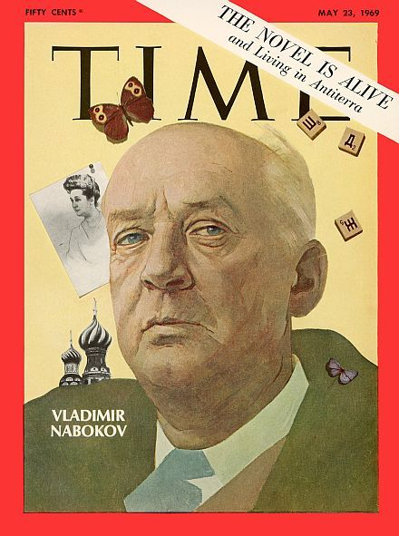
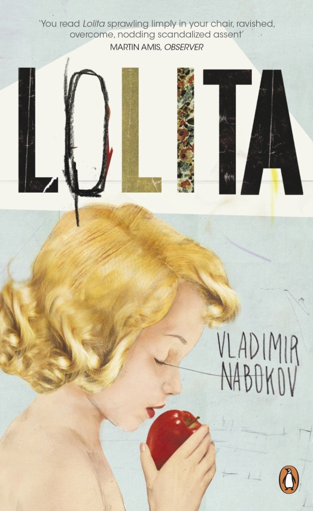

1 января – Гранин Даниил Александрович
Прозаик, классик отечественной литературы. Автор более 30 книг, свыше десятка из них экранизированы. Лауреат зарубежных и отечественных литературных премий, дважды лауреат Государственной премии, лауреат премии «Большая книга» 2012 года. Родился 1 января 1918 (1919?), в городе Волынь в семье лесника. Настоящая фамилия – Герман. После окончания школы поступил на электромеханический факультет Ленинградского политехнического института, который окончил в 1940. Работал старшим инженером энерголаборатории, затем в конструкторском бюро Кировского завода, где "начал конструировать прибор для отыскания мест повреждения в кабелях". В 1941 с народным ополчением заводчан ушел солдатом-добровольцем защищать Ленинград. Воевал на Прибалтийском фронте. Закончил войну в Восточной Пруссии командиром роты тяжелых танков. После войны работал в Ленэнерго, восстанавливая разрушенное в блокаду энергетическое хозяйство города. Затем недолго трудился в НИИ и учился в аспирантуре политехнического института, которую оставил в 1954 после выхода в свет романа "Искатели", принесшего Гранину громкий успех.
Затем последовали романы "После свадьбы" (1958) и "Иду на грозу" (1961). Убедительно отстаивая достоинство науки, талант ученого, Гранин сосредоточивает внимание на нравственных основаниях научного творчества, поэтизирует бескорыстие героев, одержимых поиском. "Иду на грозу" продолжает тему "Искателей". Была написана целая серия документальных произведений об ученых: о русском физике, о французском математике, об академике Курчатове. "... чем выше научный престиж, тем интереснее нравственный уровень ученого..." – тема, интересующая Гранина всегда. В 1980 выходит роман "Картина", вновь заставившая говорить о писателе, о его таланте создавать прозу высокого интеллектуального уровня. В это же время была написана "Блокадная книга" в соавторстве с А.Адамовичем. В 1984 – повесть "Еще заметен след". Документальная повесть "Зубр" появилась в 1987 продолжая все ту же тему одержимости ученого (судьба ученого-генетика Н.Тимофеева-Ресовского) правды научного творчества. В 1996 в журнале "Нева" публикуется сери рассказов Гранина - "Затмение", "У окна", "Дилемма", "Пепел". В 1997 – эссе "Страх" (генеалогия страха). В журнале "Наука и жизнь" начала печататься только что законченный роман о Петре I. В настоящее время Д. Гранин живет и работает в Москве.

1 января – день рождения Лолиты
Владимир Владимирович Набоков— русский и американский писатель, поэт, переводчик, литературовед и энтомолог.
«Лоли?та» — третий американский роман создателя «Защиты ужина», «Отчаяния», «Приглашения на казнь» и «Дара». Написан на английском языке, опубликован в 1955. Набоков самостоятельно перевёл «Лолиту» на русский язык; перевод вышел в 1967 в Нью-Йорке. В СССР книга впервые увидела свет в 1989 в издательстве «Известия» (серия «Библиотека журнала „Иностранная литература“»).
Вызвав скандал по обе стороны океана, эта книга вознесла автора на вершину литературного Олимпа и стала одним из самых известных и, без сомнения, самых великих произведений XX века. Сегодня, когда полемические страсти вокруг «Лолиты» уже давно улеглись, можно уверенно сказать, что это — книга о великой любви, преодолевшей болезнь, смерть и время, триумф стиля и воображения, лучшее (пусть и не самое характерное) из творений Набокова, показывающее любовь писателя к сложной игре слов и описательным деталям, характерным для всех его работ.
Роман дважды был экранизирован (1962 и 1997).

«Лолита» — моя особая любимица. Она была моей самой трудной книгой, затрагивавшей тему, которая так удалена от моей собственной эмоциональной жизни, что мне доставило особое удовольствие использовать свой комбинационный талант, чтобы сделать ее реальной.… Нет, я никогда не пожалею о «Лолите». Это напоминало составление прекрасной головоломки — составление и в то же время ее разгадывание, поскольку одно есть зеркальное отражение другого, в зависимости от того, откуда смотришь. Конечно, она совершенно затмила другие мои произведения… но я не могу осуждать ее за это. В этой мифической нимфетке есть странное нежное обаяние. (Владимир Набоков)
Два дня рождения Лолита (Долорес Гейз), успевшая прожить на свете неполных 18 лет, встретила со своим отчимом Гумбертом Гумбертом: на тринадцатилетие он подарил ей "Русалочку" Андерсена, а через год — велосипед и альбом "История американской живописи". В пятнадцатый день ее рождения Гумберт собрал все вещи сбежавшей от него Лолиты и послал в приют для сирот.